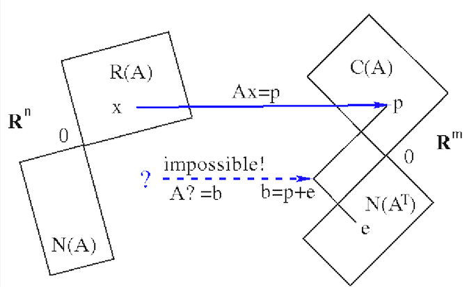
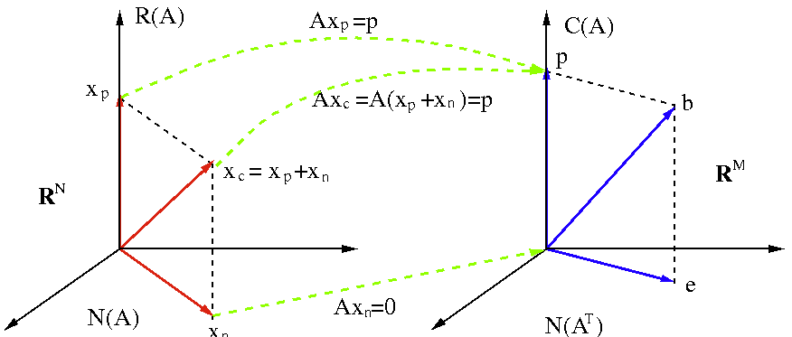

Next: Solving Over-Determined Linear Equations Up: algebra Previous: The Fundamental Theorem of
In the previous section we obtained the solution of the equation
together with the bases of the four subspaces
of  based its rref. Here we will consider an alternative
and better way to solve the same equation and find a set of
orthogonal bases that also span the four subspaces, based on the
pseudo-inverse
and
the singular value decomposition (SVD)
of . The solution obtained this
way is optimal in some certain sense as shown below.
based its rref. Here we will consider an alternative
and better way to solve the same equation and find a set of
orthogonal bases that also span the four subspaces, based on the
pseudo-inverse
and
the singular value decomposition (SVD)
of . The solution obtained this
way is optimal in some certain sense as shown below.
Consider the SVD of an matrix of rank
:
along
the diagonal (starting from the top-left corner), while all other
components are zero, and
and
are two orthogonal matrices
of dimensions and  respectively. The column
vectors
and
,
are called the left and right singular vectors of ,
respectively, and they can be used as the orthonormal bases to span
respectively
and its
subspaces and , and
and its subspaces
and .
respectively. The column
vectors
and
,
are called the left and right singular vectors of ,
respectively, and they can be used as the orthonormal bases to span
respectively
and its
subspaces and , and
and its subspaces
and .
To see this, we rewrite the SVD of as:
 |
 |
||
|
|||
|
(363) |
can be expressed as a linear
combination of the first columns of corresponding
to the non-zero singular values:
|
|||
|
(365) |
can be expressed as a linear
combination of the first columns of corresponding
to the non-zero singular values:
| Subspace | Definition | Dimension | Basis |
| column space (image) of |
columns of corresponding to non-zero singular values | ||
| left null space of | columns of corresponding to zero singular values | ||
| row space (image) of | columns of corresponding to non-zero singular values | ||
| null space of |
columns of corresponding to zero singular values | ||
| domain of |
 |
all columns of |
|
| codomain of |
 |
all columns of |
The SVD method can be used to find the pseudo-inverse of an
matrix of rank :
 and
and
We further note that matrices and are related to each other by:

We now show that the optimal solution of the linear system
can be obtained based on the pseudo-inverse
of :
 is still an
optimal solution in two ways, from the perspective of both the
domain and codomain of the linear mapping , as shown below.
is still an
optimal solution in two ways, from the perspective of both the
domain and codomain of the linear mapping , as shown below.
Pre-multiplying on both sides of the pseudo-inverse solution given above, we get:
onto spanned by
corresponding to the non-zero
singular values, while the last components
are the projection
of onto spanned by
corresponding to the zero
singular values. We see that the pseudo-inverse solution
is entirely in , containing no homogeneous component in
. In other words, has the minimum norm
(closest to the origin) compared to any other possible solution
, such as those found previously based on the rref of
, containing a non-zero homogeneous component
 :
:
We now consider the result
produced
by the pseudo-inverse solution , which, as a linear
combination of the columns of , is in its column space
:
is an exact
solution. But if
, as it contains non-zero
components in , then no solution exists. However, as
,
is the
projection of onto , the error
is minimized when compared with that of
any other approximate solution
:
is the optimal.
Summarizing the two aspects above, we see that the pseudo-inverse
solution is optimal in the sense that both its
norm
and its error
are minimized.
is not unique because
, then the complete solution can be
found by adding the entire null space to it:
.
is the optimal approximate solution with
minimum error.



Example: Given the same system considered in previous examples
in terms of the following matrices:
|
|||
|
 with
is
with
is
|
|||
|
 and
and  , perpendicular to spanned
by the last columns and . Note that
this solution
is actually
the first component
, perpendicular to spanned
by the last columns and . Note that
this solution
is actually
the first component
 of the particular
solution
found in the previous section
by Gauss-Jordan elimination, which is not in . Adding the
null space to the particular solution, we get the complete solution:
is
is the projection of
onto , with a minimum error distance
, indicating
is the optimal approximate solution.
of the particular
solution
found in the previous section
by Gauss-Jordan elimination, which is not in . Adding the
null space to the particular solution, we get the complete solution:
is
is the projection of
onto , with a minimum error distance
, indicating
is the optimal approximate solution.
Homework 3:
svd(A) to carry out the SVD of the coefficient
matrix of the linear system in Homework 2 problem 3,
 . Verify that and
are orthogonal, i.e.,
and
.
and then replace each singular value by its reciprocal, verify that
and
.
Then find the pseudo-inverse
.
. Verify that and
are orthogonal, i.e.,
and
.
and then replace each singular value by its reciprocal, verify that
and
.
Then find the pseudo-inverse
.
pinv(A) to find the pseudo-inverse
and . Compare them to what you obtained
in the previous part.
found above to solve
the system
. Find the two particular solutions
and corresponding to two different right-hand
side
and
.